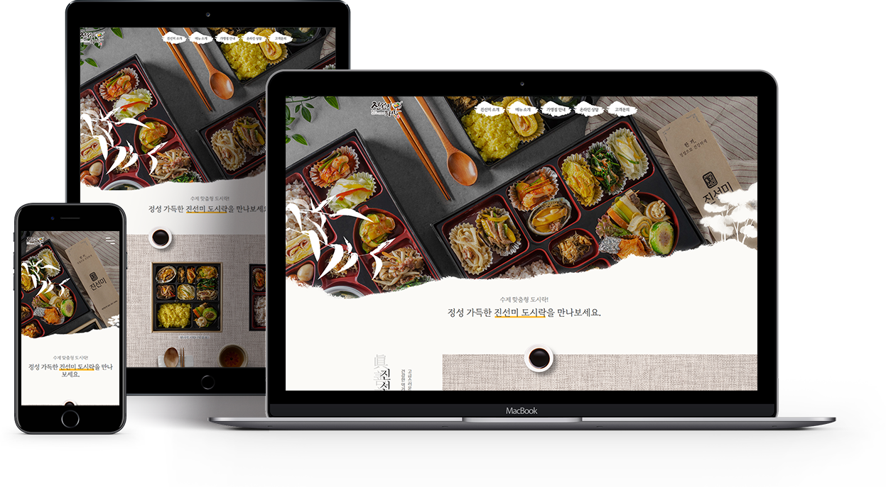

Year. 2021. 07 ~ 2021. 08
진선미 도시락은 유기농 쌀과 친환경 식자재를 사용하여 재료 손질부터 조리까지
전 과정을 오너셰프가 직접 관리하여 정성스런 수제 맞춤형 도시락을 만들고 있는 도시락 회사입니다.
진선미 대표는 회사 이름이 점차 알려지면서 홈페이지를 신규로 구축하는 작업이 필요하다고 요청이 왔고,
전통적이면서 고급스러운 느낌과 전체적으로 편안한 느낌의의 홈페이지를 요구했습니다.
디자인 100% + 퍼블리싱 100%
전통적인 느낌을 주기 위해 나뭇잎과 나무를 활용한 모양을 활용하였고,
연하고 부드러운 배경색과 한자를 추가했습니다.
고급스러운 분위기를 내기 위해서 궁중한식 느낌의 소품 그림을 활용했습니다.
진선미 대표로부터 홈페이지의 전체적인 분위기와 디자인이 아주 잘 어울린다는 평을 받았습니다.